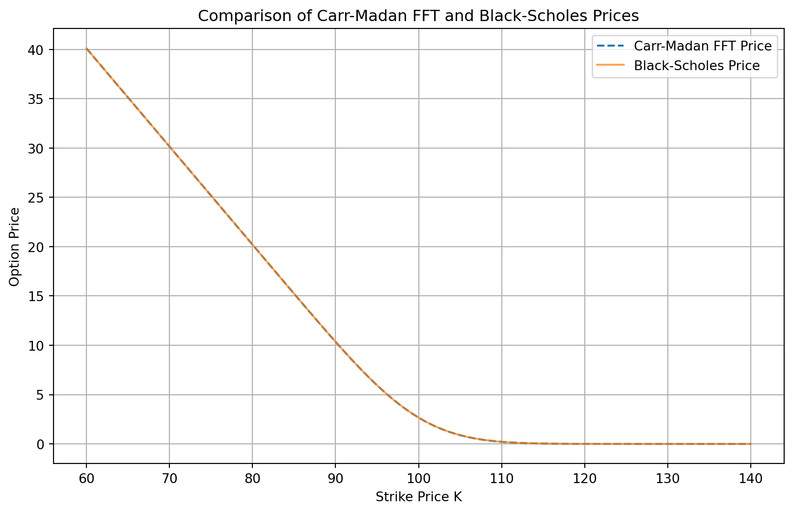
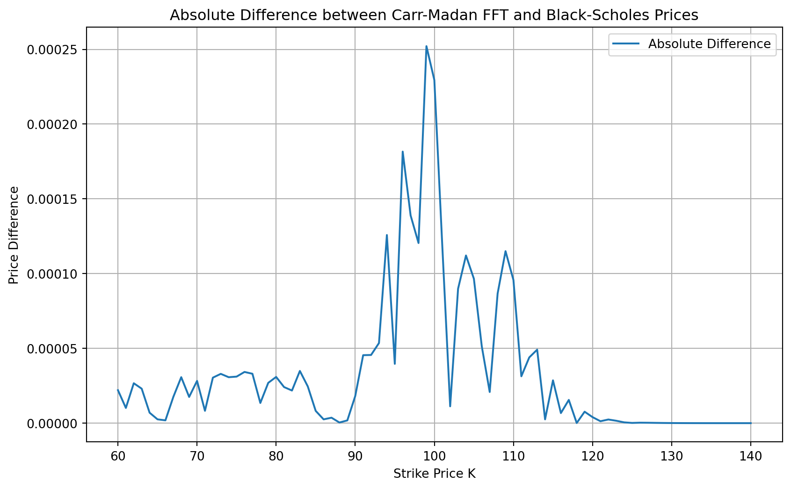
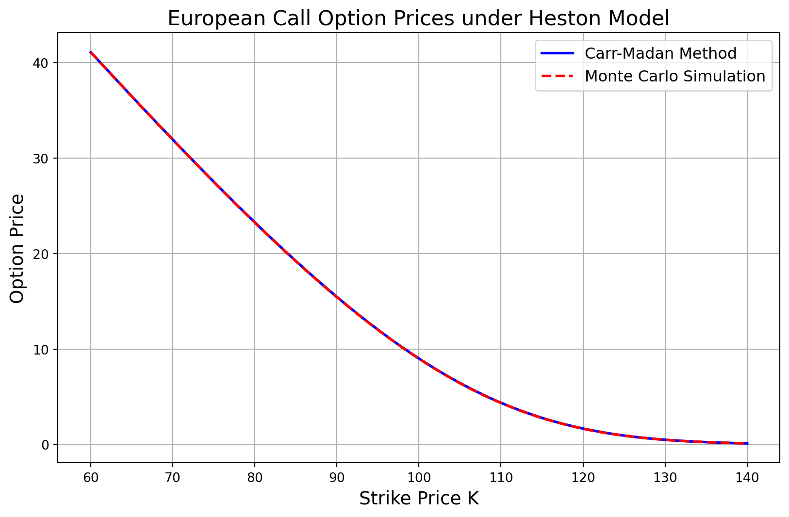
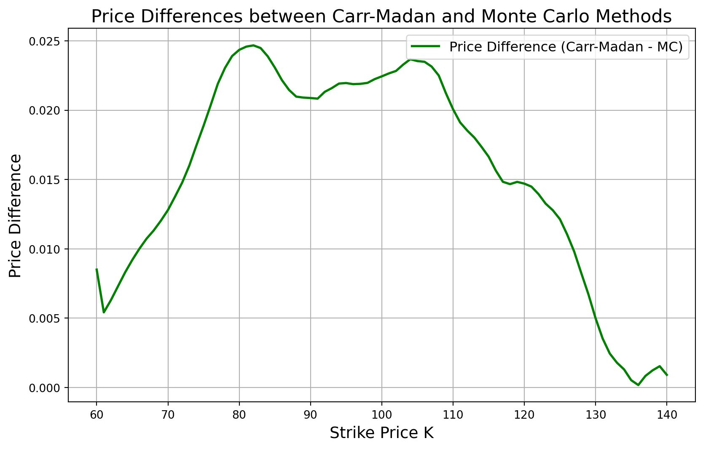
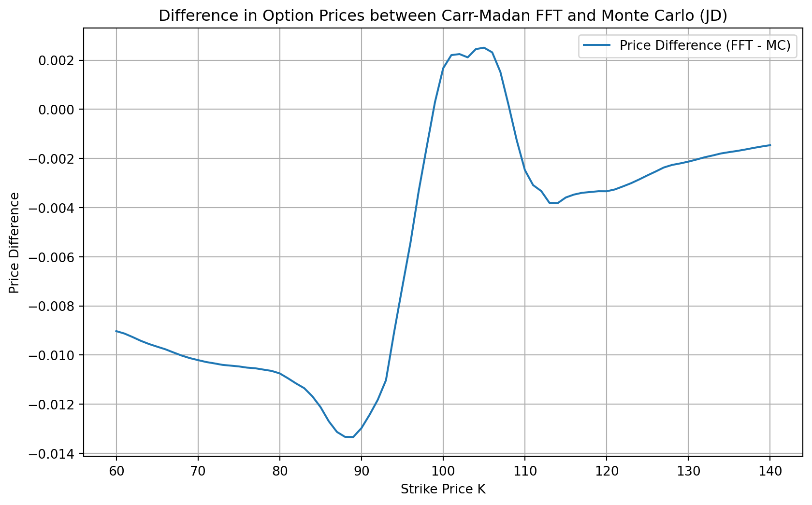

The Fourier Transform has become an essential tool in option pricing, particularly for complex models like those with stochastic volatility and Lévy processes including variance gamma and jump diffusion processes. In this chapter, we will explore how the Fourier Transform simplifies the pricing of derivative securities, examine its advantages, and provide analytical examples and Python code for practical illustration.
The key reason for using Fourier Transforms in option pricing is that they allow us to solve pricing problems more efficiently in the frequency domain rather than the time domain. Specifically, Fourier methods:
Handle Non-Gaussian Processes: Many real-world asset price models involve jumps or stochastic volatility, which may lead to non-Gaussian distributions of returns. Fourier Transforms allow us to handle these models efficiently.
Use Characteristic Functions: The Fourier Transform is closely related to the characteristic function of the underlying asset price. Many stochastic processes have closed-form characteristic functions without explicit distribution functions. Using the closed-form characteristic functions simplifies the integration required in risk-neutral valuation.
Conduct Fast Numerical Computation: By leveraging Fast Fourier Transform (FFT) algorithms, we can calculate option prices for a wide range of strikes and maturities quickly.
Simplify Complex Problems: Many option pricing models lead to complex partial differential equations (PDEs). The Fourier Transform helps transform these PDEs into simpler algebraic equations.
In this chapter, we’ll focus on the first three and demonstrate these advantages through theory, examples, and Python code.
17.2 Section 1: Theoretical Foundation
The Fourier transform of a function \(f(x)\), denoted as \(\hat{f}(u)\), is given by:
\[
\hat{f}(u) = \int_{-\infty}^{\infty} e^{-iux} f(x) \, dx,
\] where \(i=\sqrt{-1}\) and \(u\) is termed ``frequency.’’
In the context of option pricing using the Fourier Transform, our goal is to transform option payoff into the frequency domain (via the Fourier transform), which allows for efficient option pricing using techniques like the Fast Fourier Transform (FFT).
To apply the Fourier transform, we often work with the logarithm of the asset price, \(X_T = \ln(S_T)\), instead of the asset price \(S_T\) directly. This is done because log-prices simplify the structure of the characteristic function (which is essential in the Fourier method). The payoff of a European call with strike price \(K\) at maturity \(T\) becomes:
\[
C(X_T) = \max(e^{X_T} - K, 0)
\]
We now take the Fourier transform of this function with respect to \(x = X_T\) (the log-price), leading to the formula for \(\hat{C}(u)\), which is:
To compute this transform explicitly, we split the payoff function into two regions: - When \(x < \ln(K)\), the payoff is zero because \(S_T < K\). - When \(x \geq \ln(K)\), the payoff is \(e^x - K\) because \(S_T \geq K\).
This integral can be computed analytically and results in a closed-form expression for \(\hat{C}(u)\). The final result is:
\[
\hat{C}(u) = \frac{K^{1 - iu}}{iu(1 + iu)}
\]
In essence, \(\hat{C}(u)\) is the representation of the call option’s payoff in the frequency domain. It captures how different frequencies (or Fourier modes) contribute to the option price. Once the Fourier transform is applied to the payoff function, this \(\hat{C}(u)\) can be combined with the characteristic function of the underlying asset’s price process to calculate the option price.
The characteristic function \(\phi_{X}(u)\) of a random variable \(X\) is defined as:
\[
\phi_{X}(u) = \mathbb{E}[e^{i u X}].
\] The characteristic function uniquely defines the probability distribution of \(X\) and can be used to recover the density function via the inverse Fourier Transform.
The final step in the pricing process involves integrating the product of \(\hat{C}(u)\) and the characteristic function of the log-returns of the asset (under the risk-neutral probability) to recover the option price in the original domain (time or price space).
Once \(\hat{C}(u)\) is computed, the price of the option can be calculated using the Fourier inversion formula. The general formula for the call option price \(C(K)\) at time \(0\) is:
\[
C(K) = \frac{e^{-rT}}{2\pi} \int_{-\infty}^{\infty} e^{-iuk} \hat{C}(u) \phi_X(u) \, du,
\qquad(17.1)\] where \(\phi_X(u)\) is the characteristic function of the log-price process at time \(T\), \(k = \ln(K)\) is the log-strike, and \(\hat{C}(u)\) is the Fourier transform of the payoff function.
By evaluating this integral (typically done numerically), we recover the option price. This illustrate the main idea behind the appilcation of Fourier transform in pricing options.
Unfortunately, the Fast Fourier Transform (FFT) cannot be used to evaluate the pricing integral Equation 17.1, since the integrand is singular at the required evaluation point \(u = 0\). Given the considerable speed advantages of the FFT, we introduce the Carr-Madan method (Carr and Madan 1999) that can leverage the efficiency of the FFT.
17.3 The Carr-Madan Method
The key idea behind the Carr-Madan Method is to express the option price as an integral in Fourier space and then discretize it for the FFT numerical evaluation.
Step 1: Modify the Payoff Function
Let \(k\) denote the log of the strike price \(K\), and let \(C(k)\) be the desired value of a \(T\)-maturity call option with strike exp(k). Let the risk-neutral density of the \(s=\ln(S)\) be \(q(s)\). The initial call value \(C(k)\) is related to the risk-neutral density \(q(s)\) by
\[
C(k) = \int_{k}^\infty e^{-r T} (e^s-e^k) q(s)\, ds.
\]
Because \(C(k)\) approaches \(S_0\) as \(k\) tends to \(-\infty\), the call pricing function of \(k\) is not square integrable. To ensure the square integrability of the Fourier Transform, we first modify the option’s payoff function by introducing a dampening factor \(\alpha > 0\):
\[
\tilde{C}(k) = e^{\alpha k} C(k).
\] This modification ensures that the transformed function decays sufficiently fast at infinity.
Step 2: Express the Modified Price as an Integral
By the fourier inversion theorem, the modified call price can be written as:
\[
C(k) = \frac{e^{-\alpha k}}{2\pi} \int_{-\infty}^\infty e^{-i u k} \phi_{C}(u)\, du = \frac{e^{-\alpha k}}{\pi} \int_{0}^\infty e^{-i u k} \phi_{C}(u)\, du,
\qquad(17.2)\] where \(\phi_{C}(u)\) is the Fourier Transform of the option \(C(k)\) and the second equality follows because \(\phi_{C}(u)\) is odd in its imaginary part and even in its real part.
Step 3: Derive the Fourier Transform of the Payoff
The Fourier Transform \(\phi_{C}(u)\) is given by:
\[
\phi_{C}(u) = \int_{-\infty}^\infty e^{i u k} e^{\alpha k}e^{-r T} (e^{s} - e^{k})^+q(s) \, ds.
\]
By simplifying and rearranging terms, we obtain:
\[
\phi_{C}(u) = \frac{e^{-rT}\phi_{S}(u - i (\alpha + 1))}{(\alpha + i u)(\alpha + i u + 1)},
\] where \(\phi_{S}(u)\) is the characteristic function of \(\ln S\).
Step 4: Discretize the Integral for FFT
The FFT is an efficient algorithm for computing the sum \[
g(m)=\sum_{j=1}^{N} \exp\left(-i \frac{2\pi}{N}(j-1) (m-1)\right)y(j), m=1,...,N,
\] where \(N\) is typically a power of 2 and \(y(\cdot)\) is some given function. The algorithm reduces the number of multiplications in the required \(N\) summations from an order of \(N^2\) to that of \(N \log_2(N)\), a very significant reduction. We present in this section the details for writing the integration (5) as an application of the summation (16). To improve the accuracy of the approximation, we can combine it with the Simpson’s rule.
Simpson’s Rule: We divide the integration interval \([a, b]\) into \(N\) subintervals, where \(N\) is an even number. Let \(h = \frac{b - a}{N}\) be the width of each subinterval. The function \(f(x)\) is evaluated at equally spaced points \(x_1, x_2, x_3, \dots, x_{N+1}\), where \(x_j = a+(j-1) h\).
The Simpson’s Rule formula is: \[
\int_a^b f(x) \, dx \approx \frac{h}{3} \left[ f(x_1) + 4 \sum_{j=2,4,6,\dots}^{N-1} f(x_j) + 2 \sum_{j=1,3,5,\dots}^{N-2} f(x_j) + f(x_{N+1}) \right].
\] Combinig the FFT with the Simpson’s rule, we have \[
g(m)=\sum_{j=1}^{N} \exp\left(-i \frac{2\pi}{N}(j-1) (m-1)\right)y(j)w(j), m=1,...,N,
\qquad(17.3)\] where \(w(j)=4\) if \(j\) is even, \(w(j)=2\) if \(j\) is odd, and \(w(1)=w(N+1)=1\).1
Define \(u_j = \eta (j-1)\), where \(\eta\) is the spacing between points and $j = 1, 2, , N $.
Similarly, define \(k_m = -b + \lambda \, (m-1)\), where \[
\lambda = \frac{2\pi}{N \eta}
\] is the spacing in log-strike space, \[
b=\frac{N \lambda}{2}
\] is the integration upper limit of \(k\), and \(m = 1, 2, \dots, N\).
\[
\tilde{C}(k_m) \approx \frac{e^{-\alpha k_m}}{\pi} \sum_{j=1}^{N} \exp\left(-i \frac{2\pi}{N} (j-1)\, (m-1) \right) e^{i u_j b} \phi_{C}(u_j) \eta.
\] To further improve the efficiency, we use Simpson’s rule to choose the weights of each term to arrive at \[
\tilde{C}(k_m) \approx \frac{e^{-\alpha k_m}}{\pi} \sum_{j=1}^{N} \exp\left(-i \frac{2\pi}{N} (j-1)\, (m-1) \right) e^{i u_j b} \phi_{C}(u_j) \frac{\eta}{3}(3+(-1)^{j}-\delta_{j-1}),
\qquad(17.4)\] where \(\delta_n=1\) is equal to 1 if and only if \(n=0\). Equation 17.4 can be efficiently computed using the FFT method.2
Implementation Steps
1. Set the Parameters
Choose \(N\), the number of FFT points (preferably a power of 2 for computational efficiency).
Set the dampening factor \(\alpha\) to ensure convergence.
Determine \(\eta\) and \(\lambda\) based on \(N\) and the desired range of strikes.
2. Compute the Characteristic Function
For a given model (e.g., Black-Scholes, Heston), compute the characteristic function \(\phi_{S_T}(u)\) of \(\ln S_T\).
3. Calculate the Fourier Transform of the Call Payoff
Compute \(\phi_{C}(u_j)\) using:
\[
\phi_{C}(u_j) = \frac{e^{-r T}\phi_{S_T}(u_j - i (\alpha + 1))}{(\alpha + i u_j)(\alpha + i u_j + 1)}.
\]
4. Apply the FFT Equation 17.4 to get the option price.
17.4 Applications of the Carr-Madan Method
Pricing a European Call Option under the Black-Scholes Model
In the Black-Scholes model, the asset price follows a geometric Brownian motion, and the log-price \(X_T = \ln(S_T)\) is normally distributed with mean \((r - \frac{\sigma^2}{2})T\) and variance \(\sigma^2 T\). The characteristic function for the log-price \(X_T\) is:
\[
\phi_T(u) = \exp\left(iu \left(\ln(S_0) + \left(r -q-\frac{\sigma^2}{2}\right)T\right) - \frac{1}{2} \sigma^2 T u^2 \right),
\] where \(S_0\) is the initial asset price, \(r\) is the risk-free rate, \(\sigma\) is the volatility of the asset, \(T\) is the time to maturity, and \(u\) is the complex Fourier variable.
The following code implements the Carr-Madan method, which uses the FFT to price European call options by transforming the characteristic function of the Black-Scholes model into the frequency domain. The option prices are then obtained by applying Simpson’s Rule for integration and FFT for efficient computation. These prices are compared to those obtained using the Black-Scholes formula. The code also visualizes the comparison and the differences between the two methods. The results suggest that the Carr-Madan method yields an accurate call price.
Code
import numpy as npfrom numpy.fft import fftimport matplotlib.pyplot as pltfrom scipy.stats import norm# Market and option parametersS0 =100# Initial stock priceK = np.linspace(60, 140, 81) # Strike prices from 60 to 140T =0.1# Time to maturityr =0.05# Risk-free rateq =0.02# Dividend yieldsigma =0.2# Volatility# Carr-Madan method parametersalpha =1.5# Damping factor (> 0)N =2**16# Number of FFT points (must be even for Simpson's Rule)eta =0.05# Spacing in the frequency domain (smaller for higher accuracy)# Ensure N is even for Simpson's Ruleif N %2!=0: N +=1# Compute the grid in the frequency domain (v)v = np.arange(N) * eta # v_j = j * eta# Compute the grid in the log-strike domain (k)lambda_ = (2* np.pi) / (N * eta)b = N * lambda_ /2# Upper limit for kk =-b + lambda_ * np.arange(N) # k_i = -b + i * lambdadef phi(u):"""Characteristic function of log(S_T) under the Black-Scholes model.""" mu = np.log(S0) + (r - q -0.5* sigma**2) * T variance = sigma**2* Treturn np.exp(1j* u * mu -0.5* variance * u**2)# Adjustment to the characteristic function for dampingu = v - (alpha +1) *1jpsi = np.exp(-r * T) * phi(u) / (alpha**2+ alpha - v**2+1j* (2* alpha +1) * v)# Simpson's Rule weightsw = np.ones(N)w[0] = w[-1] =1w[1:-1:2] =4# Weights for odd indicesw[2:-1:2] =2# Weights for even indicesw = w * (eta /3)# Function to be transformed with weightsfft_input = psi * np.exp(1j* v * b) * w# Apply the FFTfft_output = fft(fft_input)# Compute the option pricesC_k = np.exp(-alpha * k) / np.pi * np.real(fft_output)# Convert strikes to log-strikeslog_K = np.log(K)# Interpolate the option prices at desired strikescall_prices_fft = np.interp(log_K, k, C_k)# Black-Scholes formula for European call optionsdef black_scholes_call(S0, K, T, r, sigma, q):"""Black-Scholes formula for European call options.""" d1 = (np.log(S0 / K) + (r - q +0.5* sigma**2) * T) / (sigma * np.sqrt(T)) d2 = d1 - sigma * np.sqrt(T)return np.exp(-q * T) * S0 * norm.cdf(d1) - K * np.exp(-r * T) * norm.cdf(d2)# Compute Black-Scholes pricescall_prices_bs = black_scholes_call(S0, K, T, r, sigma, q)# Plot comparisonplt.figure(figsize=(10, 6))plt.plot(K, call_prices_fft, label="Carr-Madan FFT Price", linestyle="--")plt.plot(K, call_prices_bs, label="Black-Scholes Price", alpha=0.7)plt.xlabel("Strike Price K")plt.ylabel("Option Price")plt.title("Comparison of Carr-Madan FFT and Black-Scholes Prices")plt.legend()plt.grid(True)plt.show()# Optionally, plot the absolute differenceplt.figure(figsize=(10, 6))plt.plot(K, np.abs(call_prices_fft - call_prices_bs), label="Absolute Difference")plt.xlabel("Strike Price K")plt.ylabel("Price Difference")plt.title("Absolute Difference between Carr-Madan FFT and Black-Scholes Prices")plt.legend()plt.grid(True)plt.show()


Pricing a European Call Option under the Heston (1993) Model
In the Heston stochastic volatility model (Heston 1993), the dynamics of the asset price \(S_t\) and its variance \(v_t\) are given by the following stochastic differential equations (SDEs):
Where \(v_t\) is the stochastic variance, \(\kappa\) is the rate at which \(v_t\) reverts to the long-term mean \(\theta\), \(\sigma\) is the volatility of volatility, \(W_t^S\) and \(W_t^v\) are two Wiener processes with correlation coefficient \(\rho\).
The characteristic function is more complex and involves solving a system of differential equations. The characteristic function of \(\ln(S_t)\) for the Heston model is given by (for derivation details, see Heston (1993)):
\[
\begin{multline}
\phi(u) = \exp\left\{ i u \left( \ln(S_0) + (r-q) T \right) + \frac{\kappa \theta}{\sigma^2} \left[ (b - d) T - 2 \ln\left( \frac{1 - g e^{-d T}}{1 - g} \right) \right]\\ + \frac{b - d}{\sigma^2} \left( \frac{1 - e^{-d T}}{1 - g e^{-d T}} \right) v_0 \right\},
\end{multline}
\] where \[
\begin{aligned}
b &= \kappa +\lambda- \rho \sigma i u, \\
d &= \sqrt{( \rho \sigma i u - b )^2 + \sigma^2 (i u + u^2)}, \\
g &= \frac{b - d}{b + d}, \\
\end{aligned}
\]\(v_0\) is the initial variance (volatility squared), \(q\) is the dividend yield, \(\theta\) is the long-term mean of the variance, \(\kappa\) is the rate at which the variance reverts to \(\theta\), \(\rho\) is the correlation between the asset price and its volatility, \(\sigma\) is the volatility of volatility, and \(\lambda\) is the volatility risk premium.
The following Python code implements the Carr-Madan method to price a European call option under the Heston Model and compare it to the prices obtained from simulation. The results suggest that the Carr-Madan method yields almost the same prices as those from Monte Carlo simulation. In addition, the Carr-Madan method runs hundreds of times faster than simulation.
Code
import numpy as npimport matplotlib.pyplot as pltimport time# -----------------------------# 1. Define Heston Model Parameters# -----------------------------# Market parametersS0 =100# Initial stock pricer =0.05# Risk-free interest rateq =0.02# Dividend yieldT =1.0# Time to maturity (in years)# Heston model parameterskappa =1.5# Speed of mean reversion of variancetheta =0.04# Long-term variancesigma_v =0.3# Volatility of variance (vol of vol)rho =-0.7# Correlation between asset and variancev0 =0.04# Initial variance# Carr-Madan parameters (Enhanced)alpha =1.5# Dampening factor (> 0)N =2**16# Number of FFT points (power of 2)eta =0.25# Spacing of the grid in Fourier spacelambda_ = (2* np.pi) / (N * eta) # Spacing in log-strike spaceb = N * lambda_ /2# Upper bound of log-strike# Monte Carlo simulation parameters (Enhanced)num_paths =100000# Number of simulated pathsnum_steps =500# Number of time steps# -----------------------------# 2. Define the Heston Characteristic Function# -----------------------------def heston_char_func(u, T, kappa, theta, sigma_v, rho, v0, r, q, S0):""" Characteristic function of log(S_T) under the Heston model. """ i =1j sigma = sigma_v d = np.sqrt((rho * sigma * i * u - kappa) **2+ sigma**2* (i * u + u**2)) g = (kappa - rho * sigma * i * u - d) / (kappa - rho * sigma * i * u + d) exp_dT = np.exp(-d * T) C = (np.log(S0) + (r - q) * T) * i * u + (kappa * theta / sigma**2) * ( (kappa - rho * sigma * i * u - d) * T -2* np.log((1- g * exp_dT) / (1- g)) ) D = ((kappa - rho * sigma * i * u - d) / sigma**2) * ( (1- exp_dT) / (1- g * exp_dT) ) phi = np.exp(C + D * v0)return phi# -----------------------------# 3. Carr-Madan Option Pricing Function (Enhanced)# -----------------------------def carr_madan_call_price(S0, r, q, T, kappa, theta, sigma_v, rho, v0, alpha, N, eta):""" Calculate the European call option prices using Carr-Madan method under Heston model. """ i =1j# Step 1: Compute the modified characteristic function u = np.arange(N) * eta # u values# Avoid division by zero u[0] =1e-22# Characteristic function with dampening factor phi = ( np.exp(-r * T)* heston_char_func( u - (alpha +1) * i, T, kappa, theta, sigma_v, rho, v0, r, q, S0 )/ (alpha**2+ alpha - u**2+ i * (2* alpha +1) * u) )# Step 2: Apply Simpson's Rule weights SimpsonW = np.ones(N) SimpsonW[0] =1 SimpsonW[1 : N -1 : 2] =4 SimpsonW[2 : N -2 : 2] =2 SimpsonW[-1] =1 SimpsonW = SimpsonW * (eta /3)# Step 3: Compute the FFT x = phi * np.exp(i * b * u) * SimpsonW fft_x = np.fft.fft(x) fft_x = np.real(fft_x)# Step 4: Recover the call prices k =-b + np.arange(N) * lambda_ K = np.exp(k) call_prices = np.exp(-alpha * k) / np.pi * fft_xreturn K, call_prices# -----------------------------# 4. Monte Carlo Simulation Function (Enhanced)# -----------------------------def heston_simulation( S0, v0, r, q, T, kappa, theta, sigma_v, rho, num_paths, num_steps):""" Simulate asset price paths under the Heston model using antithetic variates. """ dt = T / num_steps sqrt_dt = np.sqrt(dt) np.random.seed(0) # For reproducibility num_paths_half = num_paths //2# Initialize arrays S = np.zeros((num_paths, num_steps +1)) v = np.zeros((num_paths, num_steps +1))# Set initial values S[:, 0] = S0 v[:, 0] = v0# Cholesky decomposition for correlated Brownian motions cov_matrix = np.array([[1.0, rho], [rho, 1.0]]) L = np.linalg.cholesky(cov_matrix)for t inrange(1, num_steps +1):# Generate standard normal random variables Z = np.random.randn(num_paths_half, 2) Z_antithetic =-Z # Antithetic variates Z_full = np.vstack((Z, Z_antithetic))# Correlated random variables dW = np.dot(Z_full, L.T) * sqrt_dt# Update variance process using full truncation Euler scheme v_prev = v[:, t -1] sqrt_v_prev = np.sqrt(np.maximum(v_prev, 0)) dv = ( kappa * (theta - np.maximum(v_prev, 0)) * dt+ sigma_v * sqrt_v_prev * dW[:, 1] ) v[:, t] = np.maximum(v_prev + dv, 0) # Ensure variance is non-negative# Update asset price S_prev = S[:, t -1] S[:, t] = S_prev * np.exp( (r - q -0.5* np.maximum(v_prev, 0)) * dt + sqrt_v_prev * dW[:, 0] )# Return asset prices at maturityreturn S[:, -1]def heston_option_pricing( S0, v0, r, q, T, kappa, theta, sigma_v, rho, num_paths, num_steps, K_values):""" Price European call options using Monte Carlo simulation under the Heston model. """# Simulate asset prices at maturity S_T = heston_simulation( S0, v0, r, q, T, kappa, theta, sigma_v, rho, num_paths, num_steps )# Initialize array for call prices call_prices = np.zeros_like(K_values)# Discount factor discount_factor = np.exp(-r * T)# Calculate option prices for each strike price payoffs_matrix = np.maximum(S_T[:, np.newaxis] - K_values, 0) call_prices = discount_factor * np.mean(payoffs_matrix, axis=0)return call_prices# -----------------------------# 5. Calculate Option Prices Using Both Methods# -----------------------------# Carr-Madan methodstart_time_cm = time.time()K_cm, call_prices_cm = carr_madan_call_price( S0, r, q, T, kappa, theta, sigma_v, rho, v0, alpha, N, eta)end_time_cm = time.time()time_cm = end_time_cm - start_time_cm# Select strike prices between 60 and 140K_indices = np.where((K_cm >=60) & (K_cm <=140))K_cm = K_cm[K_indices]call_prices_cm = call_prices_cm[K_indices]# Monte Carlo simulationK_mc = np.linspace(60, 140, 81)start_time_mc = time.time()call_prices_mc = heston_option_pricing( S0, v0, r, q, T, kappa, theta, sigma_v, rho, num_paths, num_steps, K_mc)end_time_mc = time.time()time_mc = end_time_mc - start_time_mc# -----------------------------# 6. Compute Price Differences# -----------------------------# Interpolate Carr-Madan prices to match K_mccall_prices_cm_interp = np.interp(K_mc, K_cm, call_prices_cm)# Compute price differencesprice_differences = np.abs(call_prices_cm_interp - call_prices_mc)max_diff = np.max(price_differences)# -----------------------------# 7. Plot the Option Prices# -----------------------------plt.figure(figsize=(10, 6))plt.plot( K_mc, call_prices_cm_interp, label="Carr-Madan Method", color="blue", linewidth=2)plt.plot( K_mc, call_prices_mc, label="Monte Carlo Simulation", color="red", linestyle="--", linewidth=2,)plt.xlabel("Strike Price K", fontsize=14)plt.ylabel("Option Price", fontsize=14)plt.title("European Call Option Prices under Heston Model", fontsize=16)plt.grid(True)plt.legend(fontsize=12)plt.show()# -----------------------------# 8. Plot Price Differences# -----------------------------plt.figure(figsize=(10, 6))plt.plot( K_mc, price_differences, label="Price Difference (Carr-Madan - MC)", color="green", linewidth=2,)plt.xlabel("Strike Price K", fontsize=14)plt.ylabel("Price Difference", fontsize=14)plt.title("Price Differences between Carr-Madan and Monte Carlo Methods", fontsize=16)plt.grid(True)plt.legend(fontsize=12)plt.show()# -----------------------------# 9. Report Computation Times and Maximum Price Difference# -----------------------------print(f"Computation Time (Carr-Madan Method): {time_cm:.2f} seconds")print(f"Computation Time (Monte Carlo Simulation): {time_mc:.2f} seconds")print(f"Maximum Price Difference: {max_diff:.6f}")

Computation Time (Carr-Madan Method): 0.06 seconds
Computation Time (Monte Carlo Simulation): 6.02 seconds
Maximum Price Difference: 0.024669
Pricing Options When Stock Price Follows a Lévy Process
A Lévy process is a type of stochastic process with stationary, independent increments, generalizing Brownian motion and Poisson processes. It is widely used in various fields like finance, physics, and stochastic modeling due to its ability to model random jumps and continuous changes over time.
Key Properties of a Lévy Process:
Independent Increments: The changes (increments) in the process over non-overlapping time intervals are independent. For example, the change in the process from time \(t_1\) to \(t_2\) is independent of the change from time \(t_3\) to \(t_4\) if \(t_1 \leq t_2 \leq t_3 \leq t_4\).
Stationary Increments: The distribution of the increment of the process depends only on the length of the time interval, not the specific time at which the interval starts. That is, the increment between times \(t\) and \(t+s\) has the same distribution as the increment between times 0 and \(s\).
Stochastic Continuity: For every \(\epsilon > 0\) and \(t \geq 0\), the probability that the change in the process over a small interval \(h\) becomes large tends to zero as \(h \to 0\). Formally, \[ \lim_{h \to 0} P(|X(t+h) - X(t)| \geq \epsilon) = 0.
\]
Initial Condition: Typically, a Lévy process starts at zero, \(X(0) = 0\).
Examples of Lévy Processes:
Brownian Motion (Wiener Process): A Lévy process with continuous paths and normally distributed increments.
Poisson Process: A Lévy process where the increments represent the number of jumps (events) in a given time period, with the number of jumps following a Poisson distribution.
Jump Diffusion Process: A Lévy process where jumps occur at random times, with the size of each jump following a specified distribution.
Variance Gamma: A Lévy process characterized by heavy-tailed distributions, often used to model extreme events or large movements (jumps).
The characteristic function of any Lévy process \(X(t)\) can be expressed using the Lévy-Khintchine formula: \[
\mathbb{E}[e^{itX(t)}] = e^{t\psi(t)},
\] where \(\psi(t)\) is called the Lévy exponent and has the form: \[
\psi(t) = i\gamma t - \frac{1}{2} \sigma^2 t^2 + \int_{\mathbb{R}} \left( e^{itx} - 1 - itx \mathbf{1}_{|x| < 1} \right) \nu(dx).
\]
In this formula, \(\gamma\) is the drift term (linear component), \(\sigma^2\) is the variance of the continuous Gaussian component, \(\nu\) is the Lévy measure, which controls the intensity and size of jumps.
Lévy processes can thus combine continuous movements, such as Brownian motion, with jumps, providing a powerful framework for modeling both smooth and abrupt changes in time series.
Pricing Options in the Variance Gamma Model
Let \(S(t)\) represent the stock price at time \(t\). Under the risk-neutral probability \(\mathbb{Q}\), the stock price evolves as:
\[
S(t) = S(0) \exp(X(t)),
\] where \(X(t)\) is a variance gamma process: \[
X(t) = \left( (r - q) - \frac{1}{2} \sigma^2 - \frac{1}{\nu} \log\left(1 - \theta \nu - \frac{1}{2} \sigma^2 \nu \right) \right)t + \sigma W(G(t))
\] where \(r\) is the risk-free rate, \(q\) is the dividend yield, \(\sigma\) is the volatility parameter, \(G(t)\) is a Gamma process with mean rate \(t\) and variance rate \(\nu\), \(\theta\) controls the drift of the VG process, \(\nu\) is the variance rate of the Gamma process, and \(W(t)\) is a standard Brownian motion under the risk-neutral probability \(\mathbb{Q}\).
The characteristic function of \(\log(S(t))\) under the risk-neutral probability is:
The following Python code implements the Carr-Madan method to price a European call option under the Variance Gamma Model and compare it to the prices obtained from simulation. The results suggest that the Carr-Madan method yields almost the same prices as those from Monte Carlo simulation. In addition, the Carr-Madan method runs hundreds of times faster than simulation.
Code
import numpy as npfrom numpy.fft import fftimport matplotlib.pyplot as pltimport time# Market and option parametersS0 =100# Initial stock pricer =0.05# Risk-free rateq =0.0# Dividend yieldT =1.0# Time to maturity# Variance Gamma parameterssigma =0.12# Volatility parameternu =0.2# Variance rate of the Gamma processtheta =-0.14# Drift parameter# Strike pricesK = np.linspace(60, 140, 81) # Strike prices from 60 to 140# Carr-Madan method parametersalpha =5.0# Damping factor (> 0), increased for better convergenceN =2**14# Number of FFT points (must be even for Simpson's Rule)eta =0.05# Spacing in the frequency domain, decreased for better accuracy# Ensure N is even for Simpson's Ruleif N %2!=0: N +=1# Start timing the Carr-Madan methodstart_time_fft = time.time()# Compute the grid in the frequency domain (v)v = np.arange(N) * eta # v_j = j * eta# Compute the grid in the log-strike domain (k)lambda_ = (2* np.pi) / (N * eta)b = N * lambda_ /2# Upper limit for kk =-b + lambda_ * np.arange(N) # k_i = -b + i * lambdadef phi(u):""" characteristic function of log(S_T) under the Variance Gamma model. """ i =1j omega = (1/ nu) * np.log(1- theta * nu -0.5* sigma**2* nu) drift = r - q - omega phi_u = np.exp(i * u * (np.log(S0) + drift * T)) * (1- i * theta * nu * u +0.5* sigma**2* nu * u**2 ) ** (-T / nu)return phi_u# Adjusted characteristic functionu = v - (alpha +1) *1jpsi = (np.exp(-r * T) * phi(u)) / (alpha**2+ alpha - v**2+1j* (2* alpha +1) * v)# Simpson's Rule weightsw = np.ones(N)w[0] = w[-1] =1w[1:-1:2] =4# Weights for odd indicesw[2:-1:2] =2# Weights for even indicesw = w * (eta /3)# Function to be transformedfft_input = psi * np.exp(-1j* v * b) * w # sign in exponential term# Apply the FFTfft_output = fft(fft_input)# Compute the option pricesC_k = np.exp(-alpha * k) / np.pi * np.real(fft_output)# Convert log-strike grid to strike pricesK_fft = np.exp(k)# Interpolate the option prices at desired strikescall_prices_fft = np.interp(K, K_fft, C_k)# End timing the Carr-Madan methodend_time_fft = time.time()time_fft = end_time_fft - start_time_fft# Monte Carlo simulation with variance reductiondef vg_process_mc(S0, T, r, q, sigma, theta, nu, M):""" Monte Carlo simulation for the Variance Gamma process with antithetic variates. """ np.random.seed(0) # For reproducibility# Simulate Gamma process N_sim = T / nu G = np.random.gamma(N_sim, nu, M)# Antithetic variates for Z Z = np.random.randn(M) Z_antithetic =-Z# VG process for original Z X = theta * G + sigma * np.sqrt(G) * Z# VG process for antithetic Z X_antithetic = theta * G + sigma * np.sqrt(G) * Z_antithetic# Adjusted drift to ensure martingale omega = (1/ nu) * np.log(1- theta * nu -0.5* sigma**2* nu) drift = (r - q - omega) * T # drift# Simulate stock prices at maturity ST = S0 * np.exp(drift + X) ST_antithetic = S0 * np.exp(drift + X_antithetic)# Combine the two sets of simulated prices ST_combined = np.concatenate((ST, ST_antithetic))return ST_combinedM =500000# Number of simulations (total simulations will be 1,000,000 with antithetic variates)# Start timing the Monte Carlo methodstart_time_mc = time.time()# Simulate stock pricesST_combined = vg_process_mc(S0, T, r, q, sigma, theta, nu, M)# Compute payoffspayoffs = np.maximum(ST_combined[:, np.newaxis] - K, 0)# Discounted option pricescall_prices_mc = np.exp(-r * T) * np.mean(payoffs, axis=0)# End timing the Monte Carlo methodend_time_mc = time.time()time_mc = end_time_mc - start_time_mc# Compute the price differencesprice_differences = call_prices_fft - call_prices_mc# Plot comparisonplt.figure(figsize=(10, 6))plt.plot(K, call_prices_fft, label="Carr-Madan FFT Price (VG)", linestyle="--")plt.plot(K, call_prices_mc, label="Monte Carlo Price (VG)", alpha=0.7)plt.xlabel("Strike Price K")plt.ylabel("Option Price")plt.title("Comparison of Carr-Madan FFT and Monte Carlo Prices (VG)")plt.legend()plt.grid(True)plt.show()# Plot the differences in pricesplt.figure(figsize=(10, 6))plt.plot(K, price_differences, label="Price Difference (FFT - MC)")plt.xlabel("Strike Price K")plt.ylabel("Price Difference")plt.title("Difference in Option Prices between Carr-Madan FFT and Monte Carlo (VG)")plt.legend()plt.grid(True)plt.show()# Calculate the maximum absolute differencemax_difference = np.max(np.abs(price_differences))print(f"Maximum Absolute Price Difference: {max_difference:.6f}")# Print computational timesprint(f"Computational Time (Carr-Madan FFT): {time_fft:.6f} seconds")print(f"Computational Time (Monte Carlo): {time_mc:.6f} seconds")

Maximum Absolute Price Difference: 0.010150
Computational Time (Carr-Madan FFT): 0.024817 seconds
Computational Time (Monte Carlo): 0.791801 seconds
Pricing Options in a Jump Diffusion Model
A jump diffusion process is a type of stochastic process that extends a standard diffusion process, such as Brownian motion, by including random jumps. This model (e.g., Merton 1976) is widely used in financial mathematics to capture sudden, discontinuous changes in asset prices, interest rates, or other time series that are not explained by continuous diffusive processes alone.
Let \(S(t)\) represent the stock price at time \(t\), and under the risk-neutral probability \(\mathbb{Q}\), the stock price follows a jump diffusion process. The stock price dynamics can be described by:
where \(r\) is the risk-free rate, \(q\) is the continuous dividend yield, \(\sigma\) is the volatility of the Brownian motion component, \(W(t)\) is a standard Brownian motion under the risk-neutral probability, and the jump process \(J(t)\) follows: \[
J(t) = \sum_{i=1}^{N(t)} (Y_i - 1),
\] where \(N(t)\) is a Poisson process with intensity \(\lambda\), representing the number of jumps up to time \(t\), and \(Y_i\) is the jump size, often modeled as a random variable from a log-normal distribution such that \(\log(Y_i) \sim \mathcal{N}(\mu_J, \sigma_J^2)\).
Thus, the stock price is driven by both the diffusion term (due to the Brownian motion) and the jump term (due to the Poisson process).
The solution to the stochastic differential equation (SDE) for \(S(t)\) can be expressed as:
This shows that the stock price incorporates both continuous changes (via the \(W(t)\) term) and discrete jumps (via the \(\sum_{i=1}^{N(t)} \log(Y_i)\) term).
The characteristic function of \(\log(S(t))\) under the risk-neutral probability is:
\[
\phi_{\log(S(t))}^{\mathbb{Q}}(u) = e^{iu \log(S(0))} \exp\left( iu (r - q - \frac{1}{2} \sigma^2) t - \frac{1}{2} u^2 \sigma^2 t \right)
\cdot \exp\left( \lambda t \left( \exp\left( iu \mu_J - \frac{1}{2} u^2 \sigma_J^2 \right) - 1 \right) \right)
\]
This formula captures both the diffusion (Brownian motion) and jump components, making it applicable for more accurate modeling of stock prices that experience sudden jumps in addition to continuous fluctuations.
The following Python code implements the Carr-Madan method to price a European call option under the Jump Diffusion Model and compare it to the prices obtained from simulation. The results suggest that the Carr-Madan method yields almost the same prices as those from Monte Carlo simulation. In addition, the Carr-Madan method runs hundreds of times faster than simulation.
Code
import numpy as npfrom numpy.fft import fftfrom scipy.stats import normimport matplotlib.pyplot as pltimport time# Market and option parametersS0 =100# Initial stock pricer =0.05# Risk-free rateq =0.0# Dividend yieldT =0.1# Time to maturity# Volatilitysigma =0.2# Volatility of diffusion component# Jump parameterslam =0.1# Jump intensity (lambda)mu_j =-0.1# Mean of jump size (mu_J)sigma_j =0.3# Standard deviation of jump size (sigma_J)# Calculated parameter kappakappa = np.exp(mu_j +0.5* sigma_j**2) -1# Strike pricesK = np.linspace(60, 140, 81) # Strike prices from 60 to 140# Carr-Madan method parametersalpha =1.5# Damping factor (> 0)N =2**16# Number of FFT points (must be even for Simpson's Rule)eta =0.05# Spacing in the frequency domain (smaller for higher accuracy)# Ensure N is even for Simpson's Ruleif N %2!=0: N +=1# Start timing the Carr-Madan methodstart_time_fft = time.time()# Compute the grid in the frequency domain (v)v = np.arange(N) * eta # v_j = j * eta# Compute the grid in the log-strike domain (k)lambda_ = (2* np.pi) / (N * eta)b = N * lambda_ /2# Upper limit for kk =-b + lambda_ * np.arange(N) # k_i = -b + i * lambdadef phi(u):""" Characteristic function of log(S_T) under the Merton Jump-Diffusion model. """ i =1j mu = np.log(S0) + (r - q - lam * kappa -0.5* sigma**2) * T variance = sigma**2* T phi_jump = lam * T * (np.exp(i * u * mu_j -0.5* sigma_j**2* u**2) -1) cf = np.exp(i * u * mu -0.5* variance * u**2+ phi_jump)return cf# Adjusted characteristic functionu = v - (alpha +1) *1jpsi = np.exp(-r * T) * phi(u) / (alpha**2+ alpha - v**2+1j* (2* alpha +1) * v)# Simpson's Rule weightsw = np.ones(N)w[0] = w[-1] =1w[1:-1:2] =4# Weights for odd indicesw[2:-1:2] =2# Weights for even indicesw = w * (eta /3)# Function to be transformedfft_input = psi * np.exp(-1j* v * b) * w# Apply the FFTfft_output = fft(fft_input)# Compute the option pricesC_k = np.exp(-alpha * k) / np.pi * np.real(fft_output)# Convert log-strike grid to strike pricesK_fft = np.exp(k)# Interpolate the option prices at desired strikescall_prices_fft = np.interp(K, K_fft, C_k)# End timing the Carr-Madan methodend_time_fft = time.time()time_fft = end_time_fft - start_time_fft# Monte Carlo simulationdef merton_jump_diffusion_mc(S0, K, T, r, q, sigma, lam, mu_j, sigma_j, M):""" Monte Carlo simulation for European call option under Merton jump-diffusion model. """ np.random.seed(0) # For reproducibility drift = (r - q - lam * kappa -0.5* sigma**2) * T diffusion = sigma * np.sqrt(T) * np.random.randn(M)# Simulate number of jumps for each path N_jumps = np.random.poisson(lam * T, M)# Simulate jump sizes sum_Y = np.zeros(M) idx = np.where(N_jumps >0)[0]for i in idx: Y_i = np.random.normal(mu_j, sigma_j, N_jumps[i]) sum_Y[i] = np.sum(Y_i)# Compute log stock price at maturity ln_ST = np.log(S0) + drift + diffusion + sum_Y ST = np.exp(ln_ST)# Compute payoff for each simulation payoffs = np.maximum(ST[:, np.newaxis] - K, 0)# Discount back C_MC = np.exp(-r * T) * np.mean(payoffs, axis=0)return C_MCM =100000# Number of simulations# Start timing the Monte Carlo methodstart_time_mc = time.time()call_prices_mc = merton_jump_diffusion_mc(S0, K, T, r, q, sigma, lam, mu_j, sigma_j, M)end_time_mc = time.time()time_mc = end_time_mc - start_time_mc# Compute the price differencesprice_differences = call_prices_fft - call_prices_mc# Plot comparisonplt.figure(figsize=(10, 6))plt.plot(K, call_prices_fft, label="Carr-Madan FFT Price ", linestyle="--")plt.plot(K, call_prices_mc, label="Monte Carlo Price (JD)", alpha=0.7)plt.xlabel("Strike Price K")plt.ylabel("Option Price")plt.title("Comparison of Carr-Madan FFT and Monte Carlo Prices (JD)")plt.legend()plt.grid(True)plt.show()# Plot the differences in pricesplt.figure(figsize=(10, 6))plt.plot(K, price_differences, label="Price Difference (FFT - MC)")plt.xlabel("Strike Price K")plt.ylabel("Price Difference")plt.title("Difference in Option Prices between Carr-Madan FFT and Monte Carlo (JD)")plt.legend()plt.grid(True)plt.show()# Print computational timesprint(f"Computational Time (Carr-Madan FFT): {time_fft:.6f} seconds")print(f"Computational Time (Monte Carlo): {time_mc:.6f} seconds")

Computational Time (Carr-Madan FFT): 0.033638 seconds
Computational Time (Monte Carlo): 0.081035 seconds
17.5 Exercises
Exercise 17.1 Create a Python code to compare the Carr-Madan method with the direct Fourier Transform method using Equation 17.1 for pricing in-the-money, at-the-money, and out-of-the-money European call options in terms of speed and accuracy in the Black-Scholes model.
Exercise 17.2 Create a Python code to let users input all the parameter values in the jump diffusion model and use the Carr-Madan method to price European put options in this model.
Exercise 17.3 Create a Python code to let users input all the parameter values in the Heston model and use the Carr-Madan method to price European put options in this model.
Exercise 17.4 Create a Python code to show how the speed and accuracy change as one varies the damping factor \(\alpha\) and the strike price spacing \(\eta\) in the jump diffusion model.
17.6 References
Carr, P., & Madan, D. B. (1999). Option valuation using the fast Fourier transform. Journal of Computational Finance, 2(4), 61-73.
Black, F., & Scholes, M. (1973). The pricing of options and corporate liabilities. Journal of Political Economy, 81(3), 637-654.
Carr, P., and D. B. Madan. 1999. “Option Valuation Using the Fast Fourier Transform.”Journal of Computational Finance 2: 61–73.
Heston, S. 1993. “A Closed-Form Solution for Options with Stochastic Volatility with Applications to Bond and Currency Options.”Review of Financial Studies 6: 327–44.
Merton, R. 1976. “Option Pricing When Underlying Stock Returns Are Discontinuous.”Journal of Financial Economics 3: 125–44.
NOte that because for FFT to work efficiently, we need \(N\) to be even, but for the Simpson’s rule, we need even number of subintervals, i.e., \(N\) to be odd. In practice, we choose \(N\) to be even and ignore the last point evaluation for the Simpson’s weight \(w(N+1)\). When the spacing interval is small, the error from this omission is small.↩︎
For options with very short maturities, the pricing errors for close-to-money options because the value approaches the non-analytic intrinsic value. Adjusting the Fourier transform parameter values (e.g., \(N\) and \(\eta\)) may be necessary.
An alternative method proposed by Carr and Madan (1999) may also be used. See Carr and Madan (1999) for details. ↩︎